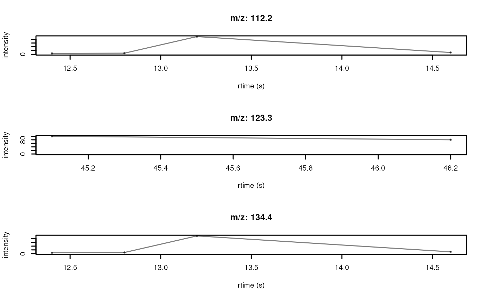

Chromatograms() can be plotted with the following functions:
The plotChromatograms(): plots each chromatogram in its separate plot by
splitting the plot area into as many panels as there are spectra.
plotChromatograms(
x,
xlab = "rtime (s)",
ylab = "intensity",
type = "o",
pch = 20,
cex = 0.6,
lwd = 1.5,
xlim = numeric(),
ylim = numeric(),
main = character(),
col = "#00000080",
asp = 1,
...
)
plotChromatogramsOverlay(
x,
xlab = "rtime (s)",
ylab = "intensity",
type = "o",
pch = 20,
cex = 0.6,
lwd = 1.5,
xlim = numeric(),
ylim = numeric(),
main = paste(length(x), "chromatograms"),
col = "#00000080",
axes = TRUE,
frame.plot = axes,
...
)A Chromatograms object.
character(1) with the label for the x-axis (by default
xlab = "rtime (s)").
character(1) with the label for the y-axis (by default
ylab = "intensity").
character(1) specifying the type of plot. See plot.default()
for details. Defaults to type = "l" which draws each peak as a line.
integer(1) or character(1) specifying the plotting symbol
(see plot.default()).
numeric(1) specifying the size of the plotting symbol (see
plot.default()).
numeric(1) specifying the line width (see plot.default()).
numeric(2) defining the x-axis limits. The range of m/z values
are used by default.
numeric(2) defining the y-axis limits. The range of intensity
values are used by default.
character(1) with the title for the plot. By default the
spectrum's MS level and retention time (in seconds) is used.
color to be used to draw the peaks. Should be either of length 1,
or equal to the number of chromatograms (to plot each chromatograms
in a different color) or be a list with colors for each individual
peak in each spectrum.
numeric(1) the aspect ratio of the plot, i.e. the ratio of
the y-axis to the x-axis. Defaults to 1.
Additional arguments to be passed to plot.default().
logical(1) whether (x and y) axes should be drawn.
logical(1) whether a box should be drawn around the
plotting area.
These functions create a plot.
Refer to the individual function description for information on the return value.
## Create a Chromatograms object
cdata <- data.frame(
msLevel = c(1L, 1L, 1L),
mz = c(112.2, 123.3, 134.4),
chromIndex = c(1L, 2L, 3L)
)
pdata <- list(
data.frame(
rtime = c(12.4, 12.8, 13.2, 14.6),
intensity = c(123.3, 153.6, 2354.3, 243.4)
),
data.frame(
rtime = c(45.1, 46.2),
intensity = c(100, 80.1)
),
data.frame(
rtime = c(12.4, 12.8, 13.2, 14.6),
intensity = c(123.3, 153.6, 2354.3, 243.4)
)
)
chr <- backendInitialize(ChromBackendMemory(),
chromData = cdata,
peaksData = pdata
) |> Chromatograms()
## Plot one chromatogram
plotChromatograms(chr[1])
## Plot the full Chromatograms object
plotChromatograms(chr)

## Define a color for each peak in each chromatogram
plotChromatograms(chr[1:2], col = c("green", "blue"))
## Overlay all chromatograms
plotChromatogramsOverlay(chr[1:2], col = c("green", "blue"))